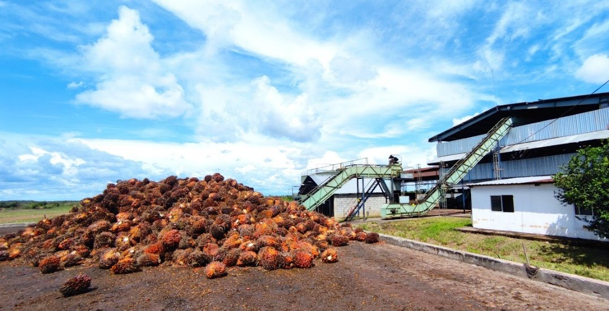
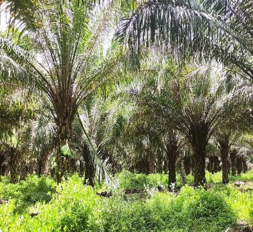
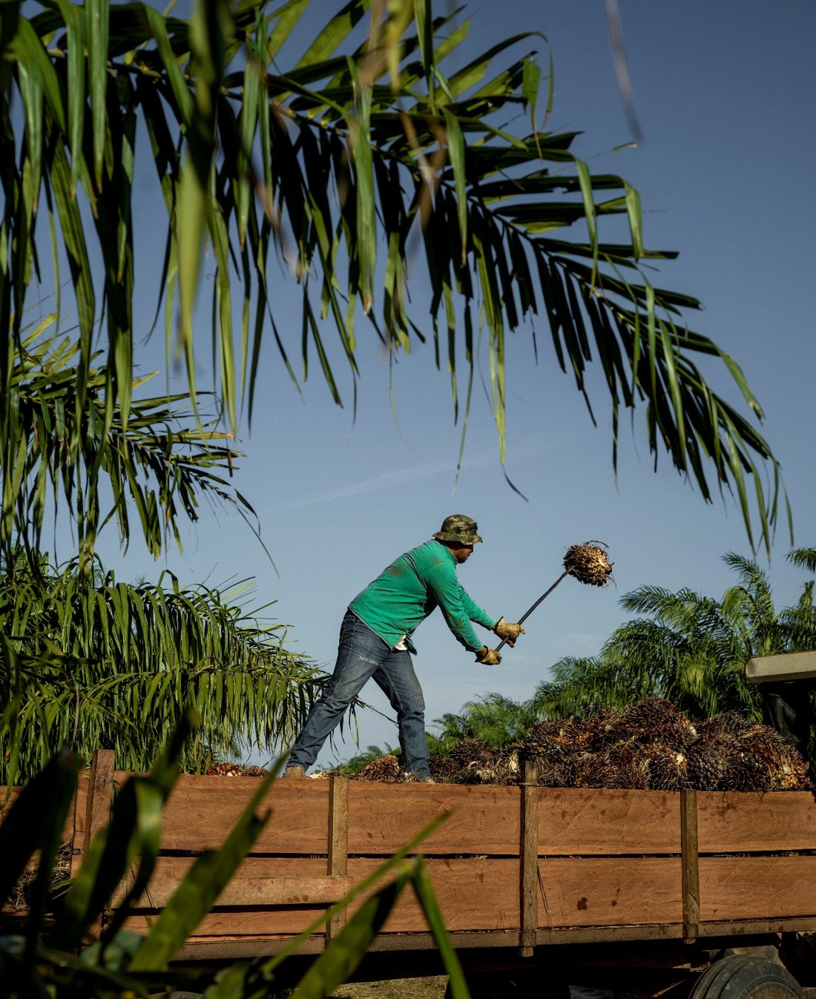

El negocio, la tierra y la comunidad crecen juntosBusiness, land, and community grow together
Nuestra forma de trabajar se apoya en tres pilares que dependen el uno del otro. Ninguno funciona sin los otros dos.Our thesis rests on three pillars that depend on one another. None works without the other two.

Negocio SostenibleSustainable Business
Demostramos que en Vichada sí se puede operar de forma rentable y a escala. Como estamos integrados de principio a fin, del vivero al aceite crudo, controlamos la calidad y los costos. Esa disciplina comercial es la que financia todo lo que hacemos con el medio ambiente y la comunidad.We have shown that you can operate profitably and at scale in Vichada. Because we are vertically integrated, from nursery to crude oil, we control quality and cost. That commercial discipline is what funds our environmental and social commitments.

Uso Responsable de la TierraResponsible Land Use
Toda nuestra siembra está sobre sabana degradada. Nunca hemos tumbado bosque ni usado turba. La palma mejora el suelo y, con nuestras prácticas circulares, la materia orgánica regresa a la tierra.All of our planting is on degraded savanna. We have never cleared forest or used peat. The palms improve the soil and, through our circular practices, organic matter returns to the land.

Región PrósperaThriving Region
Donde hay pocas oportunidades, hacemos mucho más que dar empleo. Generamos trabajo formal con todas las prestaciones, construimos vivienda y servicios para nuestra gente, cofundamos la Fundación APRODENA para acompañar a los campesinos de la zona y le ayudamos a la comunidad con la escuela del pueblo y el arreglo de las vías.Where opportunity is scarce, we do far more than provide jobs. We create formal employment with full benefits, we build housing and services for our people, we co-founded the APRODENA foundation to support local farmers, and we back the community through the local school and road rehabilitation.
La medida de nuestro impactoThe measure of our impact
Cada cifra responde directamente a uno de nuestros tres pilares.Every figure ties directly back to one of our three pillars.